acos( ) ) |
Return the arc cosine (measured in radians) of . |
| asin() |
Return the arc sine (measured in radians) of . |
| atan() |
Return the arc tangent (measured in radians) of . |
| atan2(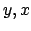) |
Return the arc tangent (measured in radians) of 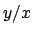. Unlike
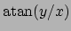, the signs of both and  are considered. are considered. |
| ceil() |
Return the ceiling of as a float. This is the smallest integral value 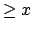. |
| cos() |
Return the cosine of (measured in radians). |
| cosh() |
Return the hyperbolic cosine of . |
| degrees() |
Convert angle from radians to degrees. |
| exp() |
Return  raised to the power of . raised to the power of . |
| fabs() |
Return the absolute value of the float . |
| floor() |
Return the floor of as a float. This is the largest integral value 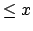. |
| fmod(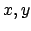) |
Return fmod(x, y), according to platform C. x % y may differ. |
| frexp() |
Return the mantissa and exponent of , as pair 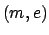. is a float and is an int, such that
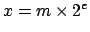. If is 0, and are both 0. Else
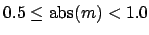. |
| hypot() |
Return the Euclidean distance,
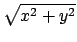. |
| ldexp(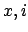) |
Return
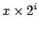. |
| log(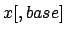) |
Return the logarithm of to the given base. If the base not specified, returns the natural logarithm (base ) of . |
| log10() |
Return the base 10 logarithm of . |
| modf() |
Return the fractional and integer parts of . Both results carry the sign of . The integer part is returned as a real. |
| pow() |
Return 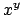. |
| radians() |
Converts angle from degrees to radians. |
| sin() |
Return the sine of (measured in radians). |
| sinh() |
Return the hyperbolic sine of . |
| sqrt() |
Return the square root of . |
| tan() |
Return the tangent of (measured in radians). |
| tanh() |
Return the hyperbolic tangent of . |